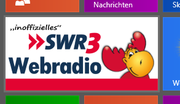
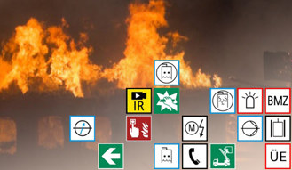
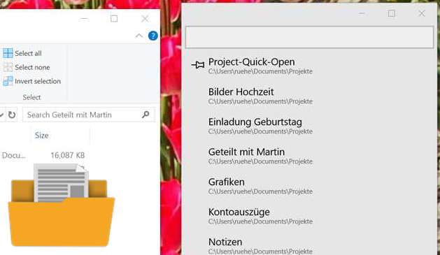
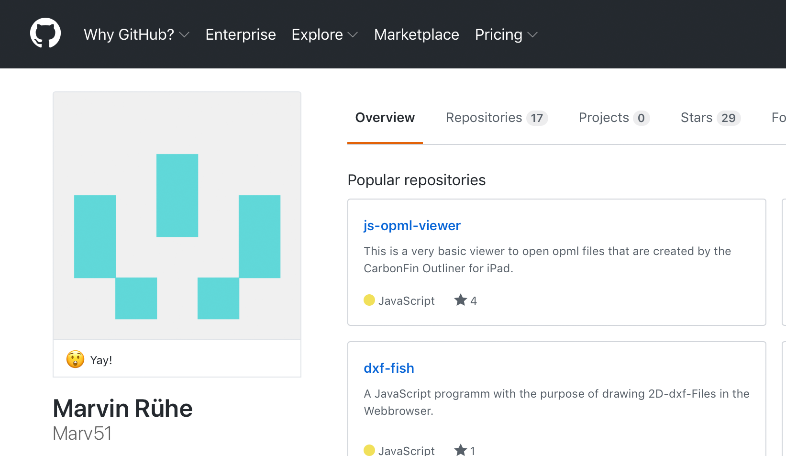

Kontakt
Man erreicht mich am besten per Mail: marvin@server-fish.de
Alternativ:
LinkedIn
StackOverflow
GitHub
Twitter
GoodReads
Letterboxd
Projekte
SWR3-Radio App

Die einfachste Art unter Windows 8.1 und 10, SWR3 als Webradio zu hören.
Details anzeigen »
Telani

Windows App für Brandschutzsachverständige: Brandmatrixen einfach visuell erstellen.
Telani Webseite »
Project-Quick-Open

Windows 10 App um häufig benutzte Ordner schnell wiederzufinden und zu öffnen.
Details anzeigen »
GitHub

Kleinere Projekte von mir findet man auf GitHub.
GitHub Profil »